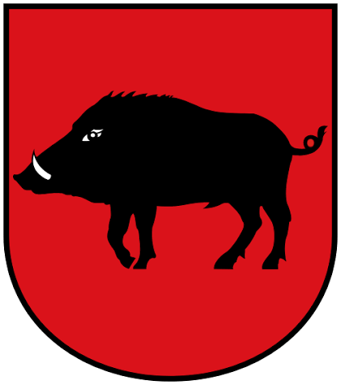

Ruszyła trasa po sześciu gminach
Pierwsze spotkania z mieszkańcami zgromadziły setki osób. Rozmawiamy o zdrowiu, drogach i szkołach.
Samorządowiec i działacz społeczny. Osiemnaście lat pracy z mieszkańcami — dla rodzin, pracy i bezpieczeństwa regionu.
Dołącz do sztabu Zobacz program
Własne M dla młodych i lepsza opieka nad seniorami.
Wsparcie lokalnych firm i szkolnictwa zawodowego.
Lepsze drogi, szybsza pomoc i sprawna opieka zdrowotna.
Pierwsze spotkania z mieszkańcami zgromadziły setki osób. Rozmawiamy o zdrowiu, drogach i szkołach.
Do programu dołączyło sześć nowych propozycji, wypracowanych razem z mieszkańcami.
Gry dla dzieci, grill i rozmowy przy stole. Zapraszamy całe rodziny.